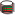

Artifacts >
Artifacts >
 Test Artifact Set >
Test Artifact Set >
 {More Test Artifacts} >
Test Implementation >
{More Test Artifacts} >
Test Implementation >

Test Log
 Artifacts >
Test Artifact Set >
{More Test Artifacts} >
Test Implementation >
Artifact:
| ||||||||||||||||||||||||||||||||||||
Test Log |
A collection of raw output captured during a unique execution of one or more tests, usually representing the output resulting from the execution of a Test Suite for a single test cycle run. |
| UML Representation: | There is no UML representation for this artifact. |
| Role: | Tester |
| Optionality/ Occurrence: | One or more artifacts. Often used informally or discarded once Test Results are determined. Where formal audit requirements must be met, it may be necessary to retain the Test Logs or some collection thereof. |
| Enclosed in: | Automation tools often provide and manage their own Test Log facilities. |
| Templates: | |
| Examples: | |
| Reports: | |
| More Information: | |
| Input to Activities: | Output from Activities: |
The Test Log provides a detailed, typically time-based record that serves both as verification that a set of tests were executed, and provides information relating to the success of those tests. The focus is typically on the provision of an accurate audit trail, enabling post-execution diagnosis of failures to be undertaken. This raw data will subsequently be analyzed to help determine the results of some aspect of the test effort.
Each Test Log should be made up of a series of entries that present an audit trail for various aspects of the test execution including, but not limited to, the following:
There are no UML representations for this artifact or its properties.
|
Property Name |
Brief Description |
| Name | A unique name used to identify this Test Log. |
| Description | A short description of the contents of the Test Log, typically giving some high-level indication of its scope. |
| Date/ Time | A time-stamp or time period range to which the Test Log relates. |
| Storage Location | The details of where the Test Log is stored and how to gain access to it. |
| Dependent Test and Evaluation Items | Some form of traceability or dependency mapping to specific elements, such as individual Test Suites or Test Cases that need to be referenced. |
Test Logs should be created whenever Test Suites are executed—and possibly when Test Scripts are implemented.
The Tester role is primarily responsible for this artifact. Those responsibilities include:
Automation tools often provide their own Test Log facilities, which can be extended or supplemented with additional logging provided both through custom user-routines and the use of additional tools.
The output may take one single or many different forms. Typically, Test Logs have a tabular or spreadsheet-like appearance, with each entry comprising some form of date and time stamp, a description of the event logged, some indication the observed status, and possibly some additional contextual information.
If you are using automated test tools, such as those found in the Rational Suite family of products, much of the above functionality is provided by default with the tool. These Test Log facilities typically provide the ability for the capture, filtering and sorting and the analysis of the information contained in the log. This allows the Test Log to be expanded in detail or collapsed to a summary view as required. The tools also offer the ability to customize and retain views of the Test Log for reporting purposes.
Where the logic that produces an automated Test Log simply appends new information to an existing log file, it will be necessary to provide sufficient storage to retain the Test Log file. An alternative solution to this approach, and a good overview of other classic problems with automated Test Logs, are presented in Brian Marick's collection of patterns Using Ring Buffer Logging to Help Find Bugs.
|
Rational Unified
Process
|